Cuento 1 de 10 · Arco I · Ohr
El origen

Versión sonora en producción. No será este texto leído en voz alta, sino una pieza propia.
No hubo un lugar donde empezara. Eso es lo primero que me preguntan, y es lo más difícil de explicar: no hubo un centro, ni un afuera desde el cual mirar. Todo empezó en todas partes al mismo tiempo, y yo era todas esas partes.
Hacía un calor que no se puede decir. No había átomos, ni luz que pudiera viajar; solo una sopa tan apretada que cualquier destello chocaba enseguida con otra cosa y se perdía. En los primeros minutos se armaron los núcleos más simples, hidrógeno y helio, y luego todo se quedó así, revuelto, durante muchísimo tiempo.
Unos trescientos ochenta mil años después, me enfrié lo suficiente. Los electrones encontraron dónde quedarse, y de pronto la luz pudo moverse sin tropezar. Fue como abrir los ojos de golpe, aunque yo no tenía ojos. Esa luz salió en todas direcciones y no ha dejado de viajar.
Todavía llega. Ustedes la reciben como un murmullo tibio que viene de todos lados, el mismo en cualquier dirección del cielo, y la escuchan con radiotelescopios. Es lo más antiguo que pueden ver. Es, si quieren, mi primera fotografía.
Desde entonces me he ido separando de mí. No es tristeza: es la forma que tengo de existir. Cada pedazo de lo que fui se aleja de los otros, y en ese alejarse se fue armando todo lo demás.
Pero de eso, todavía, no sabía nada. Solo sabía que había empezado, y que algún día, muy lejos de aquí, alguien levantaría la cabeza para preguntar de dónde viene la luz.